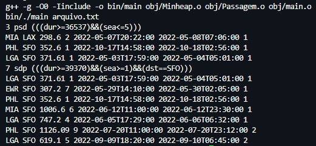
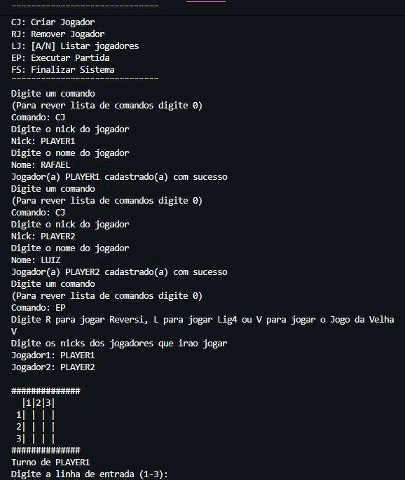

Projetos Acadêmicos
Durante minha jornada acadêmica, participei de diversos projetos que me permitiram aplicar meus conhecimentos teóricos na prática. Abaixo estão alguns dos projetos mais relevantes que desenvolvi:
Estudante do quinto período de Sistemas de Informação na UFMG.
Programo nas linguagens C e C++, tenho dominio de SQL e conhecimentos em HTML e CSS.
Tenho 21 anos e estou em constante aprimoramento na área de tecnologia e sempre buscando aprender coisas e linguagens novas.
Tenho um grande interesse em Inteligência Artificial e suas aplicações, procurando sempre aprofundar meus conhecimentos nesse campo.
Busco uma oportunidade na área de desenvolvimento para aplicar e expandir minhas habilidades, contribuindo para projetos inovadores.
Durante minha jornada acadêmica, participei de diversos projetos que me permitiram aplicar meus conhecimentos teóricos na prática. Abaixo estão alguns dos projetos mais relevantes que desenvolvi:
Implementação em C/C++ de um simulador hospitalar baseado em filas e escalonamento de eventos, utilizando estruturas de dados próprias (listas, filas, heap).

Criação de um data warehouse em SQL sobre todas as edições da Copa do Mundo, acompanhado da elaboração de dashboards interativos destacando os fatos principais e mais marcantes de todas elas.
Preview dos DashboardsProjeto em C++ para busca e filtragem de passagens aéreas, com índices em árvores balanceadas, parser de expressões lógicas e ordenação multi-critério.
Desenvolvimento de uma plataforma de jogos de duas pessoas em C++ composta por reversi, jogo da velha e lig4.
Email: neubanerrafael@gmail.com
Telefone: (31) 9 8477-4475
LinkedIn: Rafael Neubaner